Adventures of Huckleberry Finn
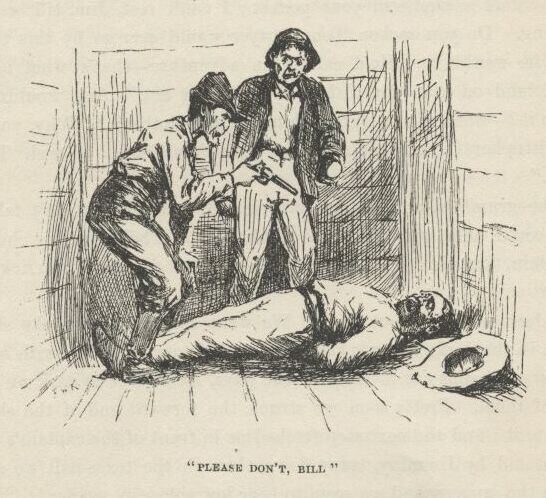
The man on the floor would shrivel up and say, "Oh, please don't, Bill; I hain't ever
goin' to tell."
And every time he said that the man with the lantern would laugh and say:
"'Deed you ain't! You never said no truer thing 'n that, you bet you." And once he said: "Hear him
beg! and yit if we hadn't got the best of him and tied him he'd a killed us both.
And what for? Jist for noth'n. Jist because we stood on our rights—that's what for. But I lay you ain't a-goin' to threaten nobody any more, Jim Turner.
Put up that pistol, Bill."
Bill says:
"I don't want to, Jake Packard. I'm for killin' him—and didn't he kill old Hatfield
jist the same way—and don't he deserve it?"
"But I don't want him killed, and I've got my reasons for it."
"Bless yo' heart for them words, Jake Packard! I'll never forgit you long's I live!"
says the man on the floor, sort of blubbering.
Packard didn't take no notice of that, but hung up his lantern on a nail and started
towards where I was there in the dark, and motioned Bill to come. I crawfished as
fast as I could about two yards, but the boat slanted so that I couldn't make very
good time; so to keep from getting run over and catched I crawled into a stateroom
on the upper side. The man came a-pawing along in the dark, and when Packard got
to my stateroom, he says:
"Here—come in here."
And in he come, and Bill after him. But before they got in I was up in the upper
berth, cornered, and sorry I come. Then they stood there, with their hands on the
ledge of the berth, and talked. I couldn't see them, but I could tell where they
was by the whisky they'd been having. I was glad I didn't drink whisky; but it wouldn't
made much difference anyway, because most of the time they couldn't a treed me because
I didn't breathe. I was too scared. And, besides, a body couldn't breathe and hear such talk. They talked low and earnest. Bill wanted to kill Turner.
He says:
"He's said he'll tell, and he will. If we was to give both our shares to him now it wouldn't make no difference after the row and the way we've served him. Shore's
you're born, he'll turn State's evidence; now you hear me. I'm for putting him out of his troubles."
"So'm I," says Packard, very quiet.
"Blame it, I'd sorter begun to think you wasn't. Well, then, that's all right. Le's
go and do it."
"Hold on a minute; I hain't had my say yit. You listen to me. Shooting's good, but
there's quieter ways if the thing's got to be done. But what I say is this: it ain't good sense to go court'n around after
a halter if you can git at what you're up to in some way that's jist as good and at
the same time don't bring you into no resks. Ain't that so?"
"You bet it is. But how you goin' to manage it this time?"
"Well, my idea is this: we'll rustle around and gather up whatever pickins we've
overlooked in the staterooms, and shove for shore and hide the truck. Then we'll wait.
Now I say it ain't a-goin' to be more'n two hours befo' this wrack breaks up and
washes off down the river. See? He'll be drownded, and won't have nobody to blame
for it but his own self. I reckon that's a considerble sight better 'n killin' of
him. I'm unfavorable to killin' a man as long as you can git aroun' it; it ain't
good sense, it ain't good morals. Ain't I right?"
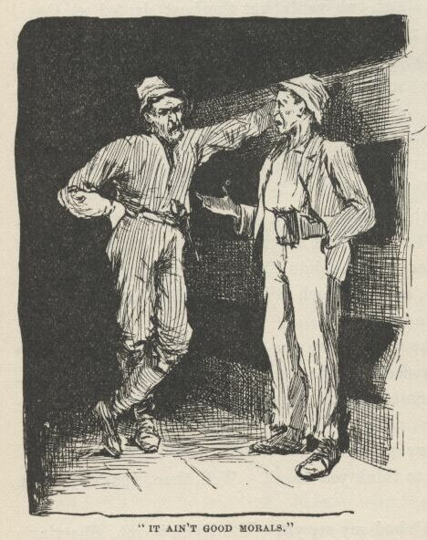
"Yes, I reck'n you are. But s'pose she don't break up and wash off?"
"Well, we can wait the two hours anyway and see, can't we?"
"All right, then; come along."
So they started, and I lit out, all in a cold sweat, and scrambled forward. It was
dark as pitch there; but I said, in a kind of a coarse whisper, "Jim!" and he answered
up, right at my elbow, with a sort of a moan, and I says:
"Quick, Jim, it ain't no time for fooling around and moaning; there's a gang of murderers
in yonder, and if we don't hunt up their boat and set her drifting down the river
so these fellows can't get away from the wreck there's one of 'em going to be in a
bad fix. But if we find their boat we can put all of 'em in a bad fix—for the sheriff 'll get 'em. Quick—hurry! I'll hunt the labboard
side, you hunt the stabboard. You start at the raft, and—"
"Oh, my lordy, lordy! raf'? Dey ain' no raf' no mo'; she done broke loose en gone I—en here we is!"
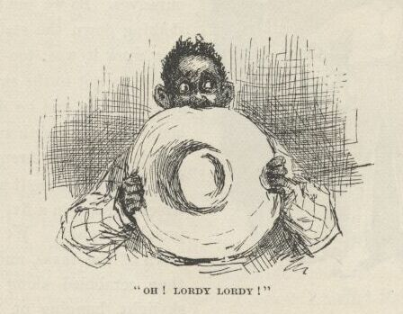
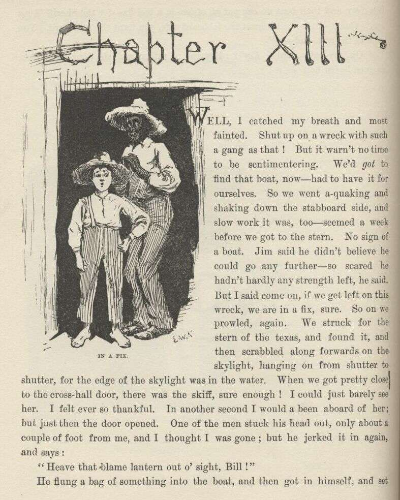
CHAPTER XIII.
WELL, I catched my breath and most fainted. Shut up on a wreck with such a gang as
that! But it warn't no time to be sentimentering. We'd got to find that boat now—had to have it for ourselves. So we went a-quaking and shaking
down the stabboard side, and slow work it was, too—seemed a week before we got to
the stern. No sign of a boat. Jim said he didn't believe he could go any further—so
scared he hadn't hardly any strength left, he said. But I said, come on, if we get
left on this wreck we are in a fix, sure. So on we prowled again. We struck for
the stern of the texas, and found it, and then scrabbled along forwards on the skylight,
hanging on from shutter to shutter, for the edge of the skylight was in the water.
When we got pretty close to the cross-hall door there was the skiff, sure enough!
I could just barely see her. I felt ever so thankful. In another second I would
a been aboard of her, but just then the door opened. One of the men stuck his head
out only about a couple of foot from me, and I thought I was gone; but he jerked it
in again, and says:
"Heave that blame lantern out o' sight, Bill!"
He flung a bag of something into the boat, and then got in himself and set down. It
was Packard. Then Bill he come out and got in. Packard says, in a low voice:
"All ready—shove off!"
I couldn't hardly hang on to the shutters, I was so weak. But Bill says:
"Hold on—'d you go through him?"
"No. Didn't you?"
"No. So he's got his share o' the cash yet."
"Well, then, come along; no use to take truck and leave money."
"Say, won't he suspicion what we're up to?"
"Maybe he won't. But we got to have it anyway. Come along."
So they got out and went in.
The door slammed to because it was on the careened side; and in a half second I was
in the boat, and Jim come tumbling after me. I out with my knife and cut the rope,
and away we went!
We didn't touch an oar, and we didn't speak nor whisper, nor hardly even breathe.
We went gliding swift along, dead silent, past the tip of the paddle-box, and past
the stern; then in a second or two more we was a hundred yards below the wreck, and
the darkness soaked her up, every last sign of her, and we was safe, and knowed it.
When we was three or four hundred yards down-stream we see the lantern show like a
little spark at the texas door for a second, and we knowed by that that the rascals
had missed their boat, and was beginning to understand that they was in just as much
trouble now as Jim Turner was.
Then Jim manned the oars, and we took out after our raft. Now was the first time
that I begun to worry about the men—I reckon I hadn't had time to before. I begun
to think how dreadful it was, even for murderers, to be in such a fix. I says to
myself, there ain't no telling but I might come to be a murderer myself yet, and then
how would I like it? So says I to Jim:
"The first light we see we'll land a hundred yards below it or above it, in a place
where it's a good hiding-place for you and the skiff, and then I'll go and fix up
some kind of a yarn, and get somebody to go for that gang and get them out of their
scrape, so they can be hung when their time comes."
But that idea was a failure; for pretty soon it begun to storm again, and this time
worse than ever. The rain poured down, and never a light showed; everybody in bed,
I reckon. We boomed along down the river, watching for lights and watching for our
raft. After a long time the rain let up, but the clouds stayed, and the lightning
kept whimpering, and by and by a flash showed us a black thing ahead, floating, and
we made for it.
It was the raft, and mighty glad was we to get aboard of it again. We seen a light
now away down to the right, on shore. So I said I would go for it. The skiff was
half full of plunder which that gang had stole there on the wreck. We hustled it
on to the raft in a pile, and I told Jim to float along down, and show a light when
he judged he had gone about two mile, and keep it burning till I come; then I manned
my oars and shoved for the light. As I got down towards it three or four more showed—up
on a hillside. It was a village. I closed in above the shore light, and laid on
my oars and floated. As I went by I see it was a lantern hanging on the jackstaff
of a double-hull ferryboat. I skimmed around for the watchman, a-wondering whereabouts
he slept; and by and by I found him roosting on the bitts forward, with his head down
between his knees. I gave his shoulder two or three little shoves, and begun to cry.
He stirred up in a kind of a startlish way; but when he see it was only me he took
a good gap and stretch, and then he says:
"Hello, what's up? Don't cry, bub. What's the trouble?"
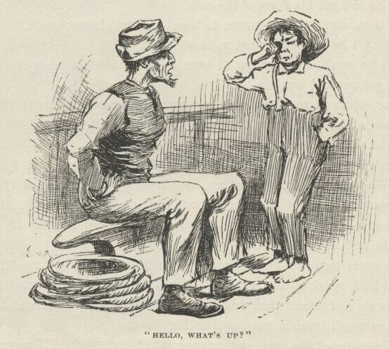
I says:
"Pap, and mam, and sis, and—"
Then I broke down. He says:
"Oh, dang it now, don't take on so; we all has to have our troubles, and this 'n 'll come out all right.
What's the matter with 'em?"
"They're—they're—are you the watchman of the boat?"
"Yes," he says, kind of pretty-well-satisfied like. "I'm the captain and the owner
and the mate and the pilot and watchman and head deck-hand; and sometimes I'm the
freight and passengers. I ain't as rich as old Jim Hornback, and I can't be so blame'
generous and good to Tom, Dick, and Harry as what he is, and slam around money the
way he does; but I've told him a many a time 't I wouldn't trade places with him;
for, says I, a sailor's life's the life for me, and I'm derned if I'd live two mile out o' town, where there ain't nothing ever goin' on, not for all his
spondulicks and as much more on top of it. Says I—"
I broke in and says:
"They're in an awful peck of trouble, and—"
"Who is?"
"Why, pap and mam and sis and Miss Hooker; and if you'd take your ferryboat and go
up there—"
"Up where? Where are they?"
"On the wreck."
"What wreck?"
"Why, there ain't but one."
"What, you don't mean the Walter Scott?"
"Yes."
"Good land! what are they doin' there, for gracious sakes?"
"Well, they didn't go there a-purpose."
"I bet they didn't! Why, great goodness, there ain't no chance for 'em if they don't
git off mighty quick! Why, how in the nation did they ever git into such a scrape?"
"Easy enough. Miss Hooker was a-visiting up there to the town—"
"Yes, Booth's Landing—go on."
"She was a-visiting there at Booth's Landing, and just in the edge of the evening
she started over with her nigger woman in the horse-ferry to stay all night at her
friend's house, Miss What-you-may-call-her I disremember her name—and they lost their
steering-oar, and swung around and went a-floating down, stern first, about two mile,
and saddle-baggsed on the wreck, and the ferryman and the nigger woman and the horses
was all lost, but Miss Hooker she made a grab and got aboard the wreck. Well, about
an hour after dark we come along down in our trading-scow, and it was so dark we didn't
notice the wreck till we was right on it; and so we saddle-baggsed; but all of us was saved but Bill Whipple—and oh, he was the best cretur!—I most wish 't it had been me, I do."
"My George! It's the beatenest thing I ever struck. And then what did you all do?"
"Well, we hollered and took on, but it's so wide there we couldn't make nobody hear.
So pap said somebody got to get ashore and get help somehow. I was the only one that
could swim, so I made a dash for it, and Miss Hooker she said if I didn't strike help
sooner, come here and hunt up her uncle, and he'd fix the thing. I made the land
about a mile below, and been fooling along ever since, trying to get people to do
something, but they said, 'What, in such a night and such a current? There ain't no
sense in it; go for the steam ferry.' Now if you'll go and—"
"By Jackson, I'd like to, and, blame it, I don't know but I will; but who in the dingnation's a-going'
to pay for it? Do you reckon your pap—"
"Why that's all right. Miss Hooker she tole me, particular, that her uncle Hornback—"
"Great guns! is he her uncle? Looky here, you break for that light over yonder-way, and turn out west
when you git there, and about a quarter of a mile out you'll come to the tavern; tell
'em to dart you out to Jim Hornback's, and he'll foot the bill. And don't you fool
around any, because he'll want to know the news. Tell him I'll have his niece all
safe before he can get to town. Hump yourself, now; I'm a-going up around the corner
here to roust out my engineer."
I struck for the light, but as soon as he turned the corner I went back and got into
my skiff and bailed her out, and then pulled up shore in the easy water about six
hundred yards, and tucked myself in among some woodboats; for I couldn't rest easy
till I could see the ferryboat start. But take it all around, I was feeling ruther
comfortable on accounts of taking all this trouble for that gang, for not many would
a done it. I wished the widow knowed about it. I judged she would be proud of me
for helping these rapscallions, because rapscallions and dead beats is the kind the
widow and good people takes the most interest in.
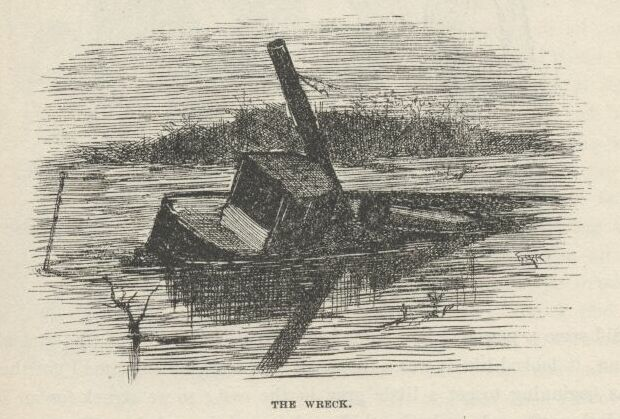
Well, before long here comes the wreck, dim and dusky, sliding along down! A kind
of cold shiver went through me, and then I struck out for her. She was very deep,
and I see in a minute there warn't much chance for anybody being alive in her. I
pulled all around her and hollered a little, but there wasn't any answer; all dead
still. I felt a little bit heavy-hearted about the gang, but not much, for I reckoned
if they could stand it I could.
Then here comes the ferryboat; so I shoved for the middle of the river on a long down-stream
slant; and when I judged I was out of eye-reach I laid on my oars, and looked back
and see her go and smell around the wreck for Miss Hooker's remainders, because the
captain would know her uncle Hornback would want them; and then pretty soon the ferryboat
give it up and went for the shore, and I laid into my work and went a-booming down
the river.
It did seem a powerful long time before Jim's light showed up; and when it did show
it looked like it was a thousand mile off. By the time I got there the sky was beginning
to get a little gray in the east; so we struck for an island, and hid the raft, and
sunk the skiff, and turned in and slept like dead people.
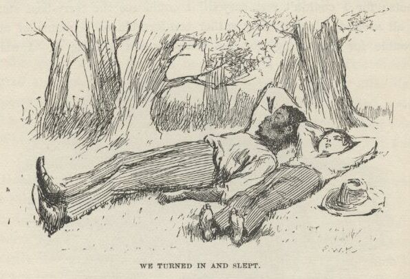
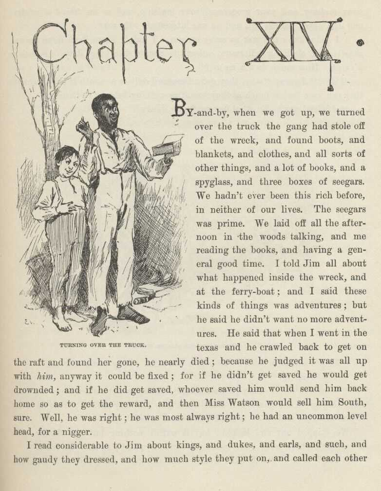
CHAPTER XIV.
BY and by, when we got up, we turned over the truck the gang had stole off of the
wreck, and found boots, and blankets, and clothes, and all sorts of other things,
and a lot of books, and a spyglass, and three boxes of seegars. We hadn't ever been
this rich before in neither of our lives. The seegars was prime. We laid off all
the afternoon in the woods talking, and me reading the books, and having a general
good time. I told Jim all about what happened inside the wreck and at the ferryboat,
and I said these kinds of things was adventures; but he said he didn't want no more
adventures. He said that when I went in the texas and he crawled back to get on the
raft and found her gone he nearly died, because he judged it was all up with him anyway it could be fixed; for if he didn't get saved he would get drownded; and if
he did get saved, whoever saved him would send him back home so as to get the reward,
and then Miss Watson would sell him South, sure. Well, he was right; he was most
always right; he had an uncommon level head for a nigger.
I read considerable to Jim about kings and dukes and earls and such, and how gaudy
they dressed, and how much style they put on, and called each other your majesty,
and your grace, and your lordship, and so on, 'stead of mister; and Jim's eyes bugged
out, and he was interested. He says:
"I didn' know dey was so many un um. I hain't hearn 'bout none un um, skasely, but
ole King Sollermun, onless you counts dem kings dat's in a pack er k'yards. How much
do a king git?"
"Get?" I says; "why, they get a thousand dollars a month if they want it; they can
have just as much as they want; everything belongs to them."
"Ain' dat gay? En what dey got to do, Huck?"
"They don't do nothing! Why, how you talk! They just set around."
"No; is dat so?"
"Of course it is. They just set around—except, maybe, when there's a war; then they
go to the war. But other times they just lazy around; or go hawking—just hawking
and sp—Sh!—d' you hear a noise?"
We skipped out and looked; but it warn't nothing but the flutter of a steamboat's
wheel away down, coming around the point; so we come back.
"Yes," says I, "and other times, when things is dull, they fuss with the parlyment;
and if everybody don't go just so he whacks their heads off. But mostly they hang
round the harem."
"Roun' de which?"
"Harem."
"What's de harem?"
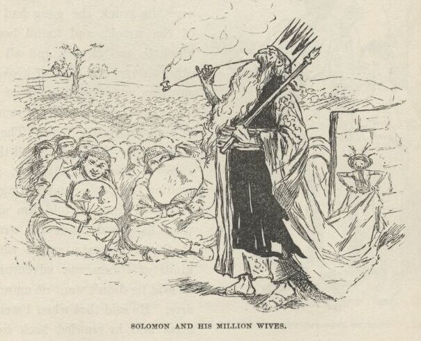
"The place where he keeps his wives. Don't you know about the harem? Solomon had
one; he had about a million wives."
"Why, yes, dat's so; I—I'd done forgot it. A harem's a bo'd'n-house, I reck'n. Mos'
likely dey has rackety times in de nussery. En I reck'n de wives quarrels considable;
en dat 'crease de racket. Yit dey say Sollermun de wises' man dat ever live'. I
doan' take no stock in dat. Bekase why: would a wise man want to live in de mids'
er sich a blim-blammin' all de time? No—'deed he wouldn't. A wise man 'ud take en
buil' a biler-factry; en den he could shet down de biler-factry when he want to res'."
"Well, but he was the wisest man, anyway; because the widow she told me so, her own self."
"I doan k'yer what de widder say, he warn't no wise man nuther. He had some er de dad-fetchedes' ways I ever see. Does you
know 'bout dat chile dat he 'uz gwyne to chop in two?"
"Yes, the widow told me all about it."
"Well, den! Warn' dat de beatenes' notion in de worl'? You jes' take en look at it a
minute. Dah's de stump, dah—dat's one er de women; heah's you—dat's de yuther one;
I's Sollermun; en dish yer dollar bill's de chile. Bofe un you claims it. What does
I do? Does I shin aroun' mongs' de neighbors en fine out which un you de bill do b'long to, en han' it over to de right one, all safe en soun', de way dat anybody
dat had any gumption would? No; I take en whack de bill in two, en give half un it to you, en de yuther half to de yuther woman. Dat's de way Sollermun
was gwyne to do wid de chile. Now I want to ast you: what's de use er dat half a
bill?—can't buy noth'n wid it. En what use is a half a chile? I wouldn' give a dern
for a million un um."
"But hang it, Jim, you've clean missed the point—blame it, you've missed it a thousand
mile."
"Who? Me? Go 'long. Doan' talk to me 'bout yo' pints. I reck'n I knows sense when
I sees it; en dey ain' no sense in sich doin's as dat. De 'spute warn't 'bout a half
a chile, de 'spute was 'bout a whole chile; en de man dat think he kin settle a 'spute
'bout a whole chile wid a half a chile doan' know enough to come in out'n de rain.
Doan' talk to me 'bout Sollermun, Huck, I knows him by de back."
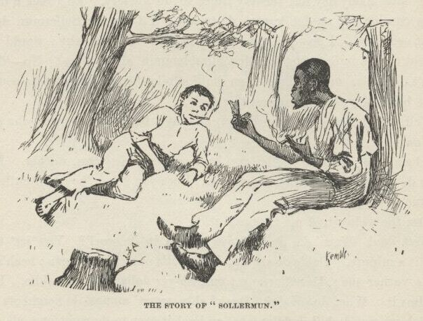
"But I tell you you don't get the point."
"Blame de point! I reck'n I knows what I knows. En mine you, de real pint is down furder—it's down deeper. It lays in de way Sollermun was raised. You
take a man dat's got on'y one or two chillen; is dat man gwyne to be waseful o' chillen?
No, he ain't; he can't 'ford it. He know how to value 'em. But you take a man dat's got 'bout five million chillen runnin'
roun' de house, en it's diffunt. He as soon chop a chile in two as a cat. Dey's plenty mo'. A chile er two, mo' er less,
warn't no consekens to Sollermun, dad fatch him!"
I never see such a nigger. If he got a notion in his head once, there warn't no getting
it out again. He was the most down on Solomon of any nigger I ever see. So I went
to talking about other kings, and let Solomon slide. I told about Louis Sixteenth
that got his head cut off in France long time ago; and about his little boy the dolphin,
that would a been a king, but they took and shut him up in jail, and some say he died
there.
"Po' little chap."
"But some says he got out and got away, and come to America."
"Dat's good! But he'll be pooty lonesome—dey ain' no kings here, is dey, Huck?"
"No."
"Den he cain't git no situation. What he gwyne to do?"
"Well, I don't know. Some of them gets on the police, and some of them learns people
how to talk French."
"Why, Huck, doan' de French people talk de same way we does?"
"No, Jim; you couldn't understand a word they said—not a single word."
"Well, now, I be ding-busted! How do dat come?"
"I don't know; but it's so. I got some of their jabber out of a book. S'pose a man
was to come to you and say Polly-voo-franzy—what would you think?"
"I wouldn' think nuff'n; I'd take en bust him over de head—dat is, if he warn't white.
I wouldn't 'low no nigger to call me dat."
"Shucks, it ain't calling you anything. It's only saying, do you know how to talk
French?"
"Well, den, why couldn't he say it?"
"Why, he is a-saying it. That's a Frenchman's way of saying it."
"Well, it's a blame ridicklous way, en I doan' want to hear no mo' 'bout it. Dey
ain' no sense in it."
"Looky here, Jim; does a cat talk like we do?"
"No, a cat don't."
"Well, does a cow?"
"No, a cow don't, nuther."
"Does a cat talk like a cow, or a cow talk like a cat?"
"No, dey don't."
"It's natural and right for 'em to talk different from each other, ain't it?"
"Course."
"And ain't it natural and right for a cat and a cow to talk different from us?"
"Why, mos' sholy it is."
"Well, then, why ain't it natural and right for a Frenchman to talk different from us? You answer me that."
"Is a cat a man, Huck?"
"No."
"Well, den, dey ain't no sense in a cat talkin' like a man. Is a cow a man?—er is
a cow a cat?"
"No, she ain't either of them."
"Well, den, she ain't got no business to talk like either one er the yuther of 'em.
Is a Frenchman a man?"
"Yes."
"Well, den! Dad blame it, why doan' he talk like a man? You answer me dat!"
I see it warn't no use wasting words—you can't learn a nigger to argue. So I quit.
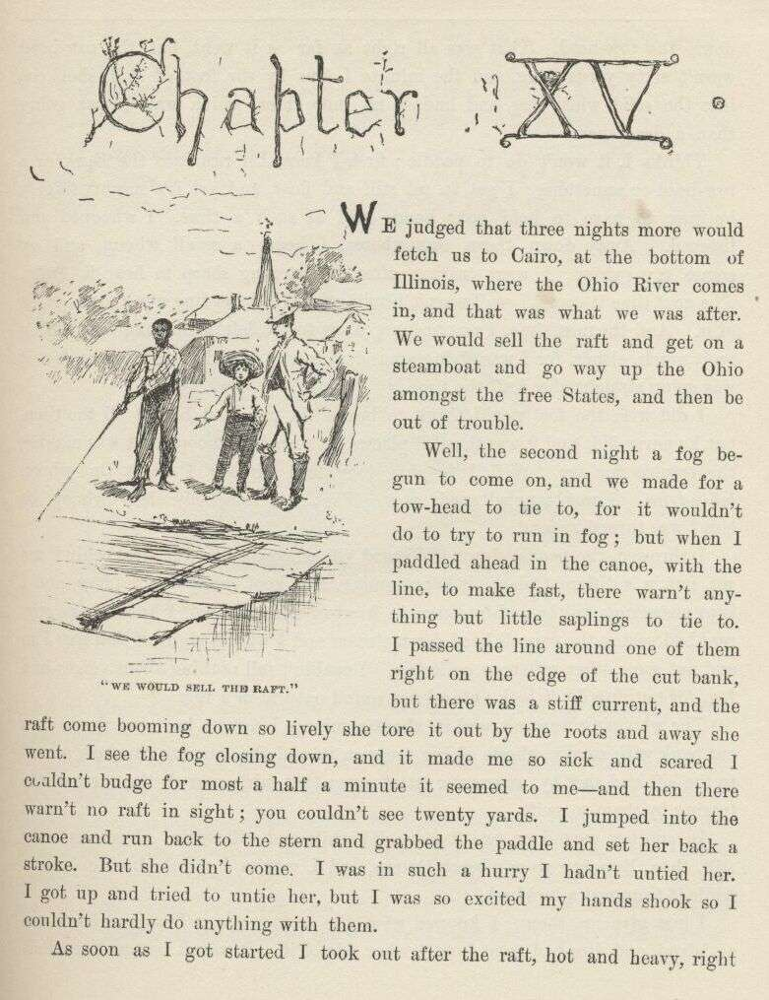
CHAPTER XV.
WE judged that three nights more would fetch us to Cairo, at the bottom of Illinois,
where the Ohio River comes in, and that was what we was after. We would sell the
raft and get on a steamboat and go way up the Ohio amongst the free States, and then
be out of trouble.
Well, the second night a fog begun to come on, and we made for a towhead to tie to,
for it wouldn't do to try to run in a fog; but when I paddled ahead in the canoe,
with the line to make fast, there warn't anything but little saplings to tie to. I
passed the line around one of them right on the edge of the cut bank, but there was
a stiff current, and the raft come booming down so lively she tore it out by the roots
and away she went. I see the fog closing down, and it made me so sick and scared
I couldn't budge for most a half a minute it seemed to me—and then there warn't no
raft in sight; you couldn't see twenty yards. I jumped into the canoe and run back
to the stern, and grabbed the paddle and set her back a stroke. But she didn't come.
I was in such a hurry I hadn't untied her. I got up and tried to untie her, but
I was so excited my hands shook so I couldn't hardly do anything with them.
As soon as I got started I took out after the raft, hot and heavy, right down the
towhead. That was all right as far as it went, but the towhead warn't sixty yards
long, and the minute I flew by the foot of it I shot out into the solid white fog,
and hadn't no more idea which way I was going than a dead man.
Thinks I, it won't do to paddle; first I know I'll run into the bank or a towhead
or something; I got to set still and float, and yet it's mighty fidgety business to
have to hold your hands still at such a time. I whooped and listened. Away down
there somewheres I hears a small whoop, and up comes my spirits. I went tearing after
it, listening sharp to hear it again. The next time it come I see I warn't heading
for it, but heading away to the right of it. And the next time I was heading away
to the left of it—and not gaining on it much either, for I was flying around, this
way and that and t'other, but it was going straight ahead all the time.
I did wish the fool would think to beat a tin pan, and beat it all the time, but he
never did, and it was the still places between the whoops that was making the trouble
for me. Well, I fought along, and directly I hears the whoop behind me. I was tangled good now. That was somebody else's whoop, or else I was turned
around.
I throwed the paddle down. I heard the whoop again; it was behind me yet, but in
a different place; it kept coming, and kept changing its place, and I kept answering,
till by and by it was in front of me again, and I knowed the current had swung the
canoe's head down-stream, and I was all right if that was Jim and not some other raftsman
hollering. I couldn't tell nothing about voices in a fog, for nothing don't look
natural nor sound natural in a fog.
The whooping went on, and in about a minute I come a-booming down on a cut bank with
smoky ghosts of big trees on it, and the current throwed me off to the left and shot
by, amongst a lot of snags that fairly roared, the currrent was tearing by them so
swift.
In another second or two it was solid white and still again. I set perfectly still
then, listening to my heart thump, and I reckon I didn't draw a breath while it thumped
a hundred.
I just give up then. I knowed what the matter was. That cut bank was an island,
and Jim had gone down t'other side of it. It warn't no towhead that you could float
by in ten minutes. It had the big timber of a regular island; it might be five or
six miles long and more than half a mile wide.
I kept quiet, with my ears cocked, about fifteen minutes, I reckon. I was floating
along, of course, four or five miles an hour; but you don't ever think of that. No,
you feel like you are laying dead still on the water; and if a little glimpse of a snag slips
by you don't think to yourself how fast you're going, but you catch your breath and think, my! how that snag's tearing along. If
you think it ain't dismal and lonesome out in a fog that way by yourself in the night,
you try it once—you'll see.
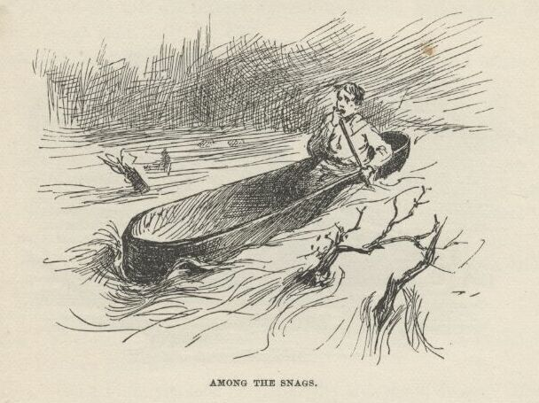
Next, for about a half an hour, I whoops now and then; at last I hears the answer
a long ways off, and tries to follow it, but I couldn't do it, and directly I judged
I'd got into a nest of towheads, for I had little dim glimpses of them on both sides
of me—sometimes just a narrow channel between, and some that I couldn't see I knowed
was there because I'd hear the wash of the current against the old dead brush and
trash that hung over the banks. Well, I warn't long loosing the whoops down amongst
the towheads; and I only tried to chase them a little while, anyway, because it was
worse than chasing a Jack-o'-lantern. You never knowed a sound dodge around so, and
swap places so quick and so much.
I had to claw away from the bank pretty lively four or five times, to keep from knocking
the islands out of the river; and so I judged the raft must be butting into the bank
every now and then, or else it would get further ahead and clear out of hearing—it
was floating a little faster than what I was.
Well, I seemed to be in the open river again by and by, but I couldn't hear no sign
of a whoop nowheres. I reckoned Jim had fetched up on a snag, maybe, and it was all
up with him. I was good and tired, so I laid down in the canoe and said I wouldn't
bother no more. I didn't want to go to sleep, of course; but I was so sleepy I couldn't
help it; so I thought I would take jest one little cat-nap.
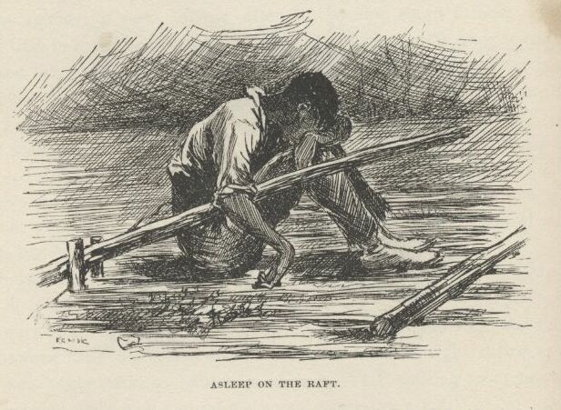
But I reckon it was more than a cat-nap, for when I waked up the stars was shining
bright, the fog was all gone, and I was spinning down a big bend stern first. First
I didn't know where I was; I thought I was dreaming; and when things began to come
back to me they seemed to come up dim out of last week.
It was a monstrous big river here, with the tallest and the thickest kind of timber
on both banks; just a solid wall, as well as I could see by the stars. I looked away
down-stream, and seen a black speck on the water. I took after it; but when I got
to it it warn't nothing but a couple of sawlogs made fast together. Then I see another
speck, and chased that; then another, and this time I was right. It was the raft.
When I got to it Jim was setting there with his head down between his knees, asleep,
with his right arm hanging over the steering-oar. The other oar was smashed off,
and the raft was littered up with leaves and branches and dirt. So she'd had a rough
time.
I made fast and laid down under Jim's nose on the raft, and began to gap, and stretch
my fists out against Jim, and says:
"Hello, Jim, have I been asleep? Why didn't you stir me up?"
"Goodness gracious, is dat you, Huck? En you ain' dead—you ain' drownded—you's back
agin? It's too good for true, honey, it's too good for true. Lemme look at you chile,
lemme feel o' you. No, you ain' dead! you's back agin, 'live en soun', jis de same
ole Huck—de same ole Huck, thanks to goodness!"
"What's the matter with you, Jim? You been a-drinking?"
"Drinkin'? Has I ben a-drinkin'? Has I had a chance to be a-drinkin'?"
"Well, then, what makes you talk so wild?"
"How does I talk wild?"
"How? Why, hain't you been talking about my coming back, and all that stuff, as if I'd
been gone away?"
"Huck—Huck Finn, you look me in de eye; look me in de eye. Hain't you ben gone away?"
"Gone away? Why, what in the nation do you mean? I hain't been gone anywheres. Where
would I go to?"
"Well, looky here, boss, dey's sumf'n wrong, dey is. Is I me, or who is I? Is I heah, or whah is I? Now dat's what I wants to know."
"Well, I think you're here, plain enough, but I think you're a tangle-headed old fool,
Jim."
"I is, is I? Well, you answer me dis: Didn't you tote out de line in de canoe fer
to make fas' to de tow-head?"
"No, I didn't. What tow-head? I hain't see no tow-head."
"You hain't seen no towhead? Looky here, didn't de line pull loose en de raf' go
a-hummin' down de river, en leave you en de canoe behine in de fog?"
"What fog?"
"Why, de fog!—de fog dat's been aroun' all night. En didn't you whoop, en didn't
I whoop, tell we got mix' up in de islands en one un us got los' en t'other one was
jis' as good as los', 'kase he didn' know whah he wuz? En didn't I bust up agin a
lot er dem islands en have a turrible time en mos' git drownded? Now ain' dat so,
boss—ain't it so? You answer me dat."
"Well, this is too many for me, Jim. I hain't seen no fog, nor no islands, nor no
troubles, nor nothing. I been setting here talking with you all night till you went
to sleep about ten minutes ago, and I reckon I done the same. You couldn't a got
drunk in that time, so of course you've been dreaming."
"Dad fetch it, how is I gwyne to dream all dat in ten minutes?"
"Well, hang it all, you did dream it, because there didn't any of it happen."
"But, Huck, it's all jis' as plain to me as—"
"It don't make no difference how plain it is; there ain't nothing in it. I know, because
I've been here all the time."
Jim didn't say nothing for about five minutes, but set there studying over it. Then
he says:
"Well, den, I reck'n I did dream it, Huck; but dog my cats ef it ain't de powerfullest
dream I ever see. En I hain't ever had no dream b'fo' dat's tired me like dis one."
"Oh, well, that's all right, because a dream does tire a body like everything sometimes.
But this one was a staving dream; tell me all about it, Jim."
So Jim went to work and told me the whole thing right through, just as it happened,
only he painted it up considerable. Then he said he must start in and "'terpret"
it, because it was sent for a warning. He said the first towhead stood for a man
that would try to do us some good, but the current was another man that would get
us away from him. The whoops was warnings that would come to us every now and then,
and if we didn't try hard to make out to understand them they'd just take us into
bad luck, 'stead of keeping us out of it. The lot of towheads was troubles we was
going to get into with quarrelsome people and all kinds of mean folks, but if we minded
our business and didn't talk back and aggravate them, we would pull through and get
out of the fog and into the big clear river, which was the free States, and wouldn't
have no more trouble.
It had clouded up pretty dark just after I got on to the raft, but it was clearing
up again now.
"Oh, well, that's all interpreted well enough as far as it goes, Jim," I says; "but
what does these things stand for?"
It was the leaves and rubbish on the raft and the smashed oar. You could see them
first-rate now.
Jim looked at the trash, and then looked at me, and back at the trash again. He had
got the dream fixed so strong in his head that he couldn't seem to shake it loose
and get the facts back into its place again right away. But when he did get the thing
straightened around he looked at me steady without ever smiling, and says:
"What do dey stan' for? I'se gwyne to tell you. When I got all wore out wid work,
en wid de callin' for you, en went to sleep, my heart wuz mos' broke bekase you wuz
los', en I didn' k'yer no' mo' what become er me en de raf'. En when I wake up en
fine you back agin, all safe en soun', de tears come, en I could a got down on my
knees en kiss yo' foot, I's so thankful. En all you wuz thinkin' 'bout wuz how you
could make a fool uv ole Jim wid a lie. Dat truck dah is trash; en trash is what people is dat puts dirt on de head er dey fren's en makes 'em ashamed."
Then he got up slow and walked to the wigwam, and went in there without saying anything
but that. But that was enough. It made me feel so mean I could almost kissed his foot to get him to take it back.
It was fifteen minutes before I could work myself up to go and humble myself to a
nigger; but I done it, and I warn't ever sorry for it afterwards, neither. I didn't
do him no more mean tricks, and I wouldn't done that one if I'd a knowed it would
make him feel that way.
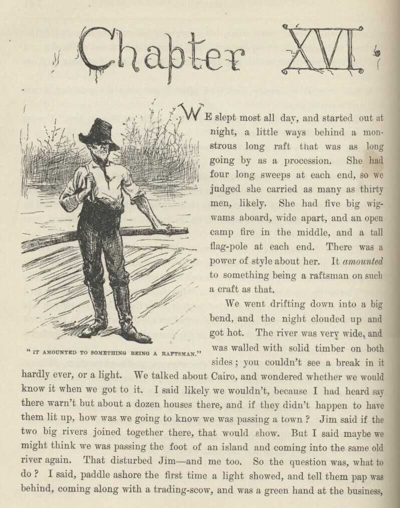
CHAPTER XVI.
WE slept most all day, and started out at night, a little ways behind a monstrous
long raft that was as long going by as a procession. She had four long sweeps at
each end, so we judged she carried as many as thirty men, likely. She had five big
wigwams aboard, wide apart, and an open camp fire in the middle, and a tall flag-pole
at each end. There was a power of style about her. It amounted to something being a raftsman on such a craft as that.
We went drifting down into a big bend, and the night clouded up and got hot. The
river was very wide, and was walled with solid timber on both sides; you couldn't
see a break in it hardly ever, or a light. We talked about Cairo, and wondered whether
we would know it when we got to it. I said likely we wouldn't, because I had heard
say there warn't but about a dozen houses there, and if they didn't happen to have
them lit up, how was we going to know we was passing a town? Jim said if the two
big rivers joined together there, that would show. But I said maybe we might think
we was passing the foot of an island and coming into the same old river again. That
disturbed Jim—and me too. So the question was, what to do? I said, paddle ashore
the first time a light showed, and tell them pap was behind, coming along with a trading-scow,
and was a green hand at the business, and wanted to know how far it was to Cairo.
Jim thought it was a good idea, so we took a smoke on it and waited.
There warn't nothing to do now but to look out sharp for the town, and not pass it
without seeing it. He said he'd be mighty sure to see it, because he'd be a free
man the minute he seen it, but if he missed it he'd be in a slave country again and
no more show for freedom. Every little while he jumps up and says:
"Dah she is?"
But it warn't. It was Jack-o'-lanterns, or lightning bugs; so he set down again,
and went to watching, same as before. Jim said it made him all over trembly and feverish
to be so close to freedom. Well, I can tell you it made me all over trembly and feverish,
too, to hear him, because I begun to get it through my head that he was most free—and who was to blame for it? Why, me. I couldn't get that out of my conscience, no how nor no way. It got to troubling
me so I couldn't rest; I couldn't stay still in one place. It hadn't ever come home
to me before, what this thing was that I was doing. But now it did; and it stayed
with me, and scorched me more and more. I tried to make out to myself that I warn't
to blame, because I didn't run Jim off from his rightful owner; but it warn't no use,
conscience up and says, every time, "But you knowed he was running for his freedom,
and you could a paddled ashore and told somebody." That was so—I couldn't get around
that noway. That was where it pinched. Conscience says to me, "What had poor Miss
Watson done to you that you could see her nigger go off right under your eyes and
never say one single word? What did that poor old woman do to you that you could
treat her so mean? Why, she tried to learn you your book, she tried to learn you
your manners, she tried to be good to you every way she knowed how. That's what she done."
I got to feeling so mean and so miserable I most wished I was dead. I fidgeted up
and down the raft, abusing myself to myself, and Jim was fidgeting up and down past
me. We neither of us could keep still. Every time he danced around and says, "Dah's
Cairo!" it went through me like a shot, and I thought if it was Cairo I reckoned I would die of miserableness.
Jim talked out loud all the time while I was talking to myself. He was saying how
the first thing he would do when he got to a free State he would go to saving up money
and never spend a single cent, and when he got enough he would buy his wife, which
was owned on a farm close to where Miss Watson lived; and then they would both work
to buy the two children, and if their master wouldn't sell them, they'd get an Ab'litionist
to go and steal them.
It most froze me to hear such talk. He wouldn't ever dared to talk such talk in his
life before. Just see what a difference it made in him the minute he judged he was
about free. It was according to the old saying, "Give a nigger an inch and he'll
take an ell." Thinks I, this is what comes of my not thinking. Here was this nigger,
which I had as good as helped to run away, coming right out flat-footed and saying
he would steal his children—children that belonged to a man I didn't even know; a
man that hadn't ever done me no harm.
I was sorry to hear Jim say that, it was such a lowering of him. My conscience got
to stirring me up hotter than ever, until at last I says to it, "Let up on me—it ain't
too late yet—I'll paddle ashore at the first light and tell." I felt easy and happy
and light as a feather right off. All my troubles was gone. I went to looking out
sharp for a light, and sort of singing to myself. By and by one showed. Jim sings
out:
"We's safe, Huck, we's safe! Jump up and crack yo' heels! Dat's de good ole Cairo
at las', I jis knows it!"
I says:
"I'll take the canoe and go and see, Jim. It mightn't be, you know."
He jumped and got the canoe ready, and put his old coat in the bottom for me to set
on, and give me the paddle; and as I shoved off, he says:
"Pooty soon I'll be a-shout'n' for joy, en I'll say, it's all on accounts o' Huck;
I's a free man, en I couldn't ever ben free ef it hadn' ben for Huck; Huck done it.
Jim won't ever forgit you, Huck; you's de bes' fren' Jim's ever had; en you's de
only fren' ole Jim's got now."
I was paddling off, all in a sweat to tell on him; but when he says this, it seemed
to kind of take the tuck all out of me. I went along slow then, and I warn't right
down certain whether I was glad I started or whether I warn't. When I was fifty yards
off, Jim says:
"Dah you goes, de ole true Huck; de on'y white genlman dat ever kep' his promise to
ole Jim."
Well, I just felt sick. But I says, I got to do it—I can't get out of it. Right then along comes a skiff with two men in it with guns, and they stopped
and I stopped. One of them says:
"What's that yonder?"
"A piece of a raft," I says.
"Do you belong on it?"
"Yes, sir."
"Any men on it?"
"Only one, sir."
"Well, there's five niggers run off to-night up yonder, above the head of the bend.
Is your man white or black?"
I didn't answer up prompt. I tried to, but the words wouldn't come. I tried for a
second or two to brace up and out with it, but I warn't man enough—hadn't the spunk
of a rabbit. I see I was weakening; so I just give up trying, and up and says:
"He's white."
"I reckon we'll go and see for ourselves."
"I wish you would," says I, "because it's pap that's there, and maybe you'd help me
tow the raft ashore where the light is. He's sick—and so is mam and Mary Ann."
"Oh, the devil! we're in a hurry, boy. But I s'pose we've got to. Come, buckle to
your paddle, and let's get along."
I buckled to my paddle and they laid to their oars. When we had made a stroke or
two, I says:
"Pap'll be mighty much obleeged to you, I can tell you. Everybody goes away when
I want them to help me tow the raft ashore, and I can't do it by myself."
"Well, that's infernal mean. Odd, too. Say, boy, what's the matter with your father?"
"It's the—a—the—well, it ain't anything much."
They stopped pulling. It warn't but a mighty little ways to the raft now. One says:
"Boy, that's a lie. What is the matter with your pap? Answer up square now, and it'll be the better for you."